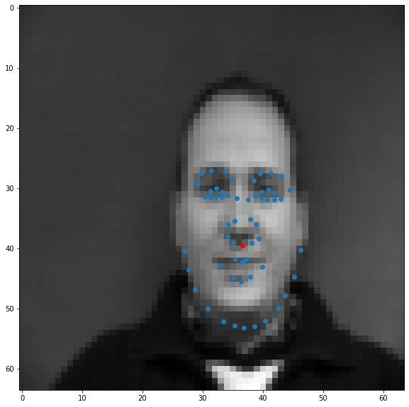

Romil Bhardwaj
The first task is to detect nose tips in the IMMFace dataset. To do this, I wrote a Dataset class for the IMM Face dataset and normalized the inputs to -0.5 to 0.5 and resized them to a fixed resolution. Here are some of the images - blue points are all keypoints, and the red point are the nose keypoints (-6 index)

Then I wrote a convolutional neural network with 4 conv layers and 2 hidden layers. Here is the network architecture:
I trained this model with ADAM optimizer using a learning rate of 1e-4 and MSE Loss.
Blue points are predicted nose points, Red points are actual ground truth nose points.
The nose detector fails in the cases when the face pose changes or there is a significant change in appearance. This is likely because the model is overfitting to the training set and has "memorized" to predict in the middle.
The second task is to detect all keypoints on the face. Since the number of images in this dataset are limited and training for 58 keypoints requires a lot more samples, we generate some using the data augmentation. I used 3 augmentations Rotation, Trasnlation, ColorJitter, each having a probability p=0.8 of being invoked with a random rotation angle, shift and/or colorjitter. These transforms were composed with the pytorch transforms.compose method which makes it really easy to combine different transforms. Here are some examples. Note that I used mode='mirror' to fill in empty pixels left by rotation or translation.

I then added more layers to my CNN architecture, making it a total of 6 conv layers and 2 hidden layers. I also increased the number of neurons in the hidden layers.
I trained with the same optimizer and learning rate as before, but I noticed a lot of my outputs were 0, while others were changing. To fix this, I added L2 regularization with weight decay = 1e-4 and used LeakyReLU instead of regular ReLU activation. LeakyReLU works better because it avoids "dead" ReLUs, where the gradient for negative inputs is 0. LeakyReLU has a very slight gradient for negative values which allows it recover from skewed weights.
Finally I trained this model with ADAM optimizer using a learning rate of 1e-4, weight decay of 1e-5 and MSE Loss.
Blue points are predicted points, Red points are actual ground truth points.

The detector fails in these two cases because the pose of the face changes or the face differs from the population (in this case, slightly taller), which makes the network mis-predict the keypoints.
Here is a visualization of the filters, produced by plotting the weight tensors of the filters. The earlier layers learn to detect higher level features, while the later layers detect finer details in the image.
In this part, we train on the IBug dataset which has 6666 images with 68 keypoints for each image. While writing the dataloader, I realized the bounding boxes for this dataset can be very tight, leading to keypoints lying outside the cropped image. To fix, I rescaled the bounding boxes around the center by a factor of 1.4 to ensure most keypoints lie inside the cropped image. I used the same augmentations as before: Rotation, Trasnlation, ColorJitter, but trained for more epochs.
Here are few sample images
I used ResNet50 and changed its first layer to accept 1 channel (gray) images and the output layer to output 136 values (68 keypoints x,y). Here is the architecture
I trained it using the ADAM optimizer with a learning rate of 1e-4 for 5 epochs. I obtained a Kaggle Mean Absolute Error of 16.91509 on the test dataset.
Here is a plot of the validation and training loss

Here are visualizations of predictions on the test set.
Blue points are predicted points, Red points are actual ground truth points.
Finally, I ran the model on some of my own images. Here are the results:

It worked well for mine and James May's face, but clearly it is not trained well for an alien species like Yoda :)